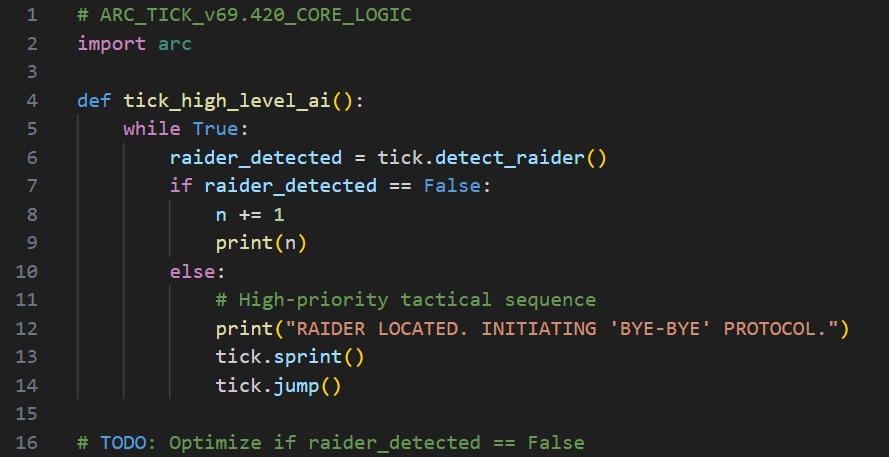

SPERANZA In what is being called "The most significant breaktrough since the invention of the Anvil pistol", Speranza's top researchers have finally breached the encription of the firmware driving a captured ARC Tick.
For years, the researchers have speculated on the deep, neural-network-driven logic that allows Ticks to coordinate their movements and execute high-precision ambushes on unsuspecting Raiders on the worst possible timing.
Late last night, lead researcher Lizzy released the decrypted "Source Code" to a stunned (and slightly confused) public. The code is as follows:
The decrypted "Source Code" of the ARC Tick.
"We were expecting layers of sub-routines, ethical sub-processors, perhaps even a sense of self-preservation," Lizzy told the Gazette while staring blankly at a wall, as if the work she has done for the past 6 years has concluded in the most anticlimactic way possible. "We spent three years trying to bypass the encryption on the "tick_high_level_ai()" function alone, thinking it included a highly advanced AI protocol. Spoiler alert, it was not. We also found out that the audio file that the ARC plays once it spots a target is actually named "Scare_them_lmfao.mp3".
Reactions at the docks have been less than enthusiastic. "They spent millions to read that shitty code? I figured that shit out the first time a Tick took off my left boot. If the Mayor wants to pay me a million credits, I can leak the firmware for the ARC Queen, too. Goes like this probably, if raider detected, shoot big fucking laser. Send the check to my locker."
"It’s all about knowing our enemy," Mayor Hallowell defended in a press release this morning. "Before this discovery, we suspected they wanted to kill us. Now, we know they want to kill us. That is the kind of tactical certainty that keeps Speranza safe. Also, as Sun Tzu once said, "Know your enemy and know yourself; in a hundred battles you will never be in peril." In my opinion, the 42 million credits were spent for the good of all Speranza."